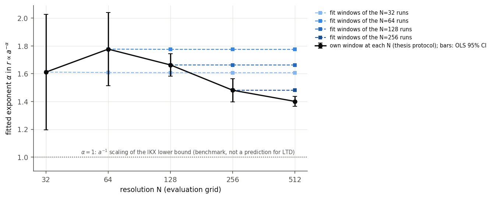

M.Sc. thesis · Applied mathematics
My contribution
My 2021 M.Sc. thesis studied bounds on passive-scalar mixing (University of L’Aquila; supervisor: Prof. Stefano Spirito). The subsequent Python implementation, numerical report and resolution study extend that work.
2021 thesis · resolution study extended in 2026
Extended to N=512: the apparent resolution dependence of the fitted mixing exponent is primarily a moving-fit-window effect; on fixed time windows it converges at about second order.
Formal M.Sc. thesis title: “Bounds on mixing of passive scalars advected by incompressible energy and enstrophy constrained flows and Anomalous dissipation” (Univ. of L'Aquila, 2021). The heading above is this project's own descriptive title.
The Python implementation, numerical report and resolution study were developed in 2026 and extend the 2021 thesis topic; they are not the original submitted thesis, which is unchanged.
Problem
How efficiently can an incompressible, enstrophy-constrained velocity field mix a passive scalar, and what are the theoretical limits on that mixing rate? Numerically: is the fitted dependence of the mixing rate on the size of the initial scalar blob a converged property of the computation?
Approach
The Lin-Thiffeault-Doering (LTD) instantaneous-optimal stirring velocity is derived from first principles via a constrained-optimisation argument, then simulated on the 2-torus with a pseudo-spectral (FFT) solver, Leray projection, and adaptive RK45 time integration (ported from Gautam Iyer's original MATLAB code). A resolution study extends the computation from N=32 to N=512 Fourier modes per direction, compares successive resolutions on common time windows, and adds 2/3-rule dealiasing, time-integration tolerance, and initial-data comparisons.
Verification
The Python code reproduces the original thesis tables exactly at N=32 and N=64, and 48 automated tests check the spectral operators, norms, Leray projection, optimal velocity, transport against exact solutions, and the thesis results. On common resolved time intervals, successive resolutions agree, and dealiasing or tighter RK45 tolerances leave the fitted decay rates essentially unchanged.
Key finding
The original thesis protocol fits each run over the last two thirds of its resolved time, and finer grids stay resolved longer, so the fit window moves to later times as N increases. On fixed time windows the fitted exponent converges at approximately second order; the drift of the exponent obtained with the original protocol (1.61 at N=32, 1.78 at N=64, 1.40 at N=512) is primarily this moving-window effect. The effective exponent itself varies with time and differs between the two tested initial-data families, so the computations do not establish a single universal or asymptotic power-law exponent. The a⁻¹ scaling used for comparison belongs to a theoretical lower bound on the mix norm (Iyer, Kiselev and Xu); it is not a prediction that the instantaneous LTD strategy must attain.



Limitations
N=512 has not been compared with N=1024; the resolved simulation time is finite; the tested range of blob sizes spans less than a factor of two; and only two initial-data families were examined. The late-time (asymptotic) scaling therefore remains open. Optional molecular diffusion is implemented but has not been studied systematically.